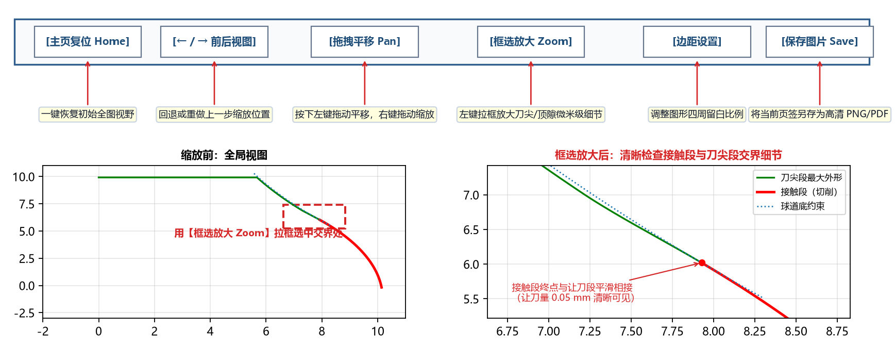

第五章：六大可视化图表标签页详解
右侧主工作区共设有 6 个交互式工程图表标签页（Tab 1 ~ Tab 6）。每次点击 ▶ 计算 (F5) 后，全部 6 个标签页会同步刷新，从六个维度全方位展示设计结果：
- 理论几何：刀具自身廓形（Tab 1）、球道法向设计截面（Tab 2）、星形套轴向剖面（Tab 3）、机床子午面摆动姿态（Tab 4）；
- 实际仿真与磨刀：精确刀具反向仿真与钢球落座（Tab 5）、圆弧近似刀具五子图对比（Tab 6）。
六大图表标签页速查与快捷键
您可以直接用鼠标点击顶部标签栏切换，也可以使用键盘快捷键 Ctrl + 1 ~ Ctrl + 6 瞬间切换：
| 标签序号 | 标签页名称 | 快捷键 | 数值属性与核心看图目的 | 详细教程链接 |
|---|---|---|---|---|
| Tab 1 | 精确刀具廓形 |
Ctrl+1 |
【理论值】 查看精确成型刀具全貌、有效接触段（红）、边缘延伸段（橙，含左下角放大窗）与刀尖避空段（绿）、最大外径与刀尖高度标注 | 5.1 Tab 1：精确刀具廓形 |
| Tab 2 | 球道设计截面 |
Ctrl+2 |
【理论值】 核对球道法向设计截面、接触角上下限、接触角跨距、接触点标注，以及左上角球道底放大图（纵向夸大）中的顶隙 | 5.2 Tab 2：球道设计截面 |
| Tab 3 | 星形套轴向剖面 |
Ctrl+3 |
【理论值】 核对星形套过球道轴向剖面尺寸（）及球道底壁厚 | 5.3 Tab 3：星形套轴向剖面 |
| Tab 4 | 加工姿态(子午面) |
Ctrl+4 |
【理论值】 动态检视刀具与刀柄在 三个摆角位置的包络关系与防干涉情况 | 5.4 Tab 4：加工姿态(子午面) |
| Tab 5 | 精确刀具反向仿真 |
Ctrl+5 |
【实际值】 三子图布局：检验精确刀具切出球道与钢球实际落座（含实际 PCD 核对）、独立球道底局部放大子图（右上）及微米级法向偏差（右下） | 5.5 Tab 5：精确刀具反向仿真 |
| Tab 6 | 圆弧近似刀具 |
Ctrl+6 |
【磨刀尺寸 + 实际值】 五子图布局：圆弧近似刀具（含左半刃口四分段着色、右半刀尖可延伸范围与立体圆柱段示意）、切出球道实际落座、独立球道底局部放大、球道法向偏差与刀具半径差 | 5.6 Tab 6：圆弧近似刀具 |
贴心细节：底部首次出现术语注释
每个图形页签的画布最底部均配有两行浅灰色小字注释，专门解释在该页签中首次出现的工程术语（如接触段、虚拟钢球、球道底约束、法向截面、实际落座、法向偏差、交界等），读图时无需翻书即可随时对照理解。
底部图表导航工具栏操作指南
在右侧图表区域的左下角，配备有全功能交互工具栏和实时坐标读数器：

| 工具按钮 | 图标/名称 | 操作方法与实用技巧 |
|---|---|---|
| ① 复位视图 | [主页 Home] |
当您放大或平移图表后，点击此按钮立即恢复默认的 1:1 全局居中视图。 |
| ② 后退 / 前进 | [<-] [->] |
在您之前浏览过的多个局部放大视图历史之间前后切换。 |
| ③ 平移视图 | [平移 Pan] |
点击激活后：
|
| ④ 框选放大 | [框选放大 Zoom] |
最常用功能：点击激活后，在图表任意局部（如球道底部顶隙区或刀尖交界处）按住鼠标左键拉出一个矩形框，即可将该微米级细节放大至全屏查看！用鼠标右键拉框则是缩小。 |
| ⑤ 边距设置 | [边距] |
弹出滑块微调图表四周留白边距与子图间距。 |
| ⑥ 保存图片 | [保存图片 Save] |
将当前正在查看的标签页图表直接导出保存为高清 .png / .pdf / .svg 图像文件，可直接插入技术报告或 PPT。 |
| ⑦ 实时坐标 | 右侧 x=... y=... |
鼠标在图表画布内移动时，状态栏右侧实时显示当前光标所在位置的精确工程坐标值（单位：mm 或 μm）。 |